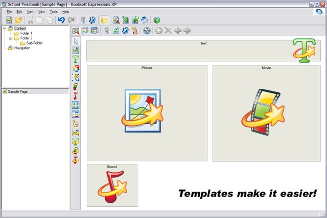
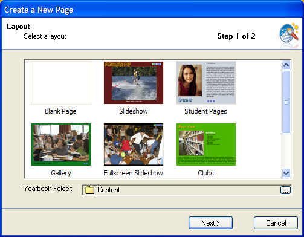

24 Jan 2004
24 Jan 2004
First Posted
 vbAccelerator ListView Control
vbAccelerator ListView Control
 Subclassing Without The Crashes
Subclassing Without The Crashes
 Transparent AVI Player Control
Transparent AVI Player Control
 Providing a proper VB Application Icon, Including Large Icons and 32-Bit Alpha Images
Providing a proper VB Application Icon, Including Large Icons and 32-Bit Alpha Images
 vbAccelerator Toolbar and CoolMenu Control v3.5
vbAccelerator Toolbar and CoolMenu Control v3.5
 Adding Scroll Bars to Forms, PictureBoxes and User Controls
Adding Scroll Bars to Forms, PictureBoxes and User Controls

Booksoft Expressions: CD Yearbooks Made Easy
An easy-to-use, powerful multimedia yearbook creation enviroment
Booksoft's Expressions is the world's first and most advanced yearbook creation editing suite. The software gives complete creative control to the user in a powerful yet easy to use package, and can produce some amazing interactive yearbooks.
About Booksoft Expressions
Expressions is a complete multimedia publishing package using leading edge technology. It can create dynamic pages with free positioning of text, images, shapes as well as animated pictures, movies and sounds. Elements with events and behaviours allow complex navigation and animations to be constructed, and all of this power is wrapped by an attractive, easy to use user interface.
Expressions 2004 Startup Wizard
Once a yearbook has been designed, it can be easily packaged onto with an independent viewer application for distribution.
Some of the more advanced features of Expressions XP 2004 include:
- Instantly add drop shadows and outlines to elements on the page
- Keeping pages uniform with built-in style sheets
- Built-in image editing
- Sharp text rendering
- Soundtrack feature allowing music to play throughout the yearbook
Using vbAccelerator Code
Expressions makes extensive use of vbAccelerator code, repackaged and recompiled for ease of distribution:
- Subclassing is used extensively, both in the code for WM_PAINT processing and indirectly for the controls.
- True Win32 Scrollbars allow for scroll bars with an extended ranges beyond the VB version's 16 bit range.
- DIBSections are used throughout to store and manipulate images, including in an Image Editor. Extensions to the code include transparency processing.
- The Toolbar and Rebar control is used for all toolbars with XP Visual Style support.
- Using alpha icons with VB is used to provide a high quality icon for the viewer and editor application.
- The information in Using XP styles was used to embed a manifest in the application.
- The Common Dialog Replacements reduce dependencies and download size. - our colour picker likely uses some info from your site
- The List View control is used along with an ImageList to generate dynamic images for previews.
- Transparent AVI player is used to display windows shell file copy progress on our progress dialogs
More recently, Booksoft have been investigating Alpha DIB Sections in conjunction with images created using Photoshop to generate some state-of-the-art graphics and displays.
The Booksoft Website
Booksoft's site and information about Expressions 2004 can be found here: